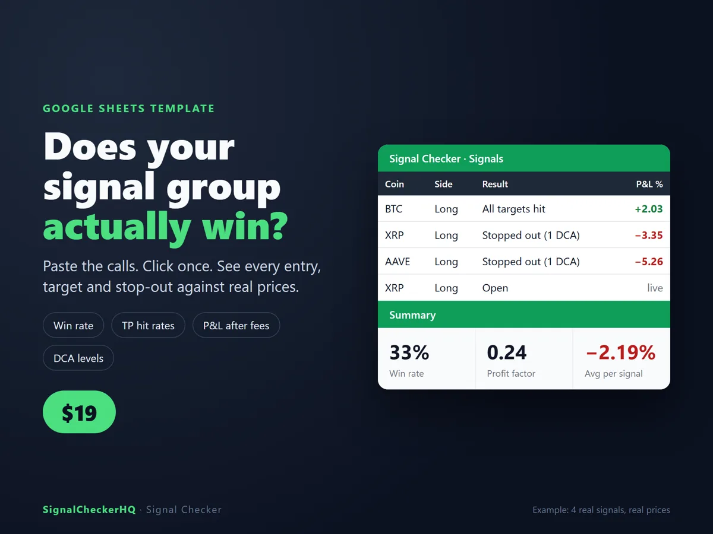
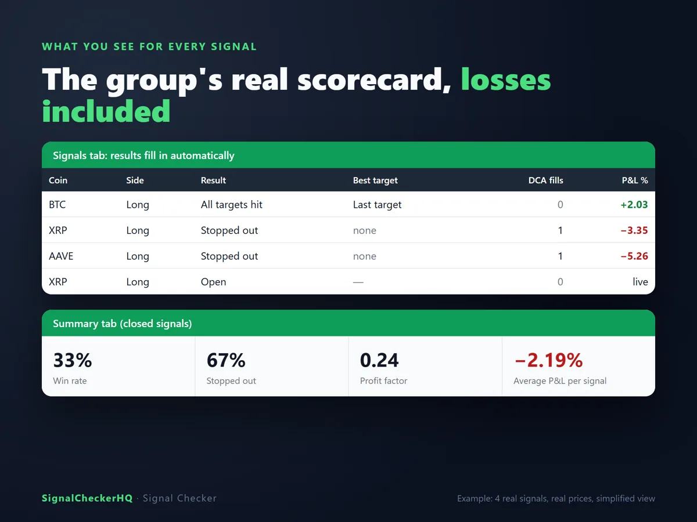
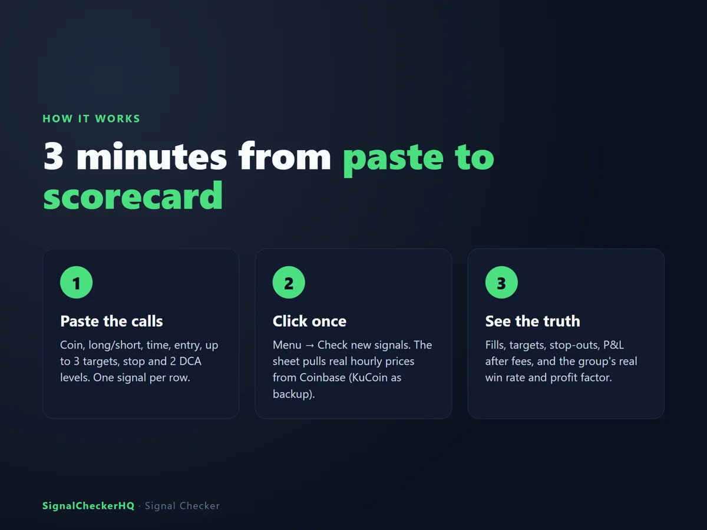
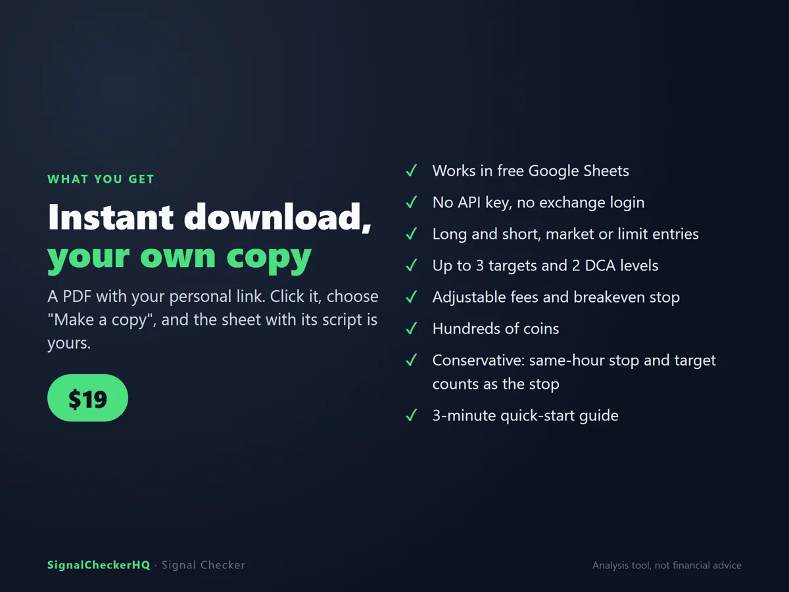

Does your signal group actually win?
Paste the calls. Click once. See every entry, target and stop-out against real hourly prices, with fees included.
Instant download · works in free Google Sheets · Crypto Signal Checker

For every signal
- Whether the entry ever filled
- Which targets hit, or whether it was stopped out first
- DCA fills and your real average price
- P&L after fees, max gain and max drawdown
- Open trades with live unrealized P&L
The Summary tab
- The group's real win rate and TP1/TP2/TP3 hit rates
- Profit factor, best and worst trades, results by coin
- What $100 per signal would have made
Features
- Works in free Google Sheets, nothing to install
- No exchange account or API key
- Long and short, market or limit entries, up to 3 targets and 2 DCA levels
- Adjustable fees, fill window, max trade length, breakeven stop
- Conservative: if a stop and a target hit in the same hour, the stop counts



What you get
An instant download with your personal link to copy the sheet (script included), a license key and a 3-minute quick-start guide.
Good to know
- You need a free Google account. Runs on desktop; the Google Sheets phone app can view results.
- The first run asks Google's permission to fetch public price data. It only writes to your own copy.
- Want to try first? The free Signal Checker Lite checks your first 10 signals.
Questions
Where do the prices come from?
Coinbase hourly candles, with KuCoin as backup for coins Coinbase doesn't list.
Does it work with any signal group?
Yes, as long as the calls have a coin, an entry and a stop or targets. You paste them in; it doesn't connect to Telegram or Discord.
Save with the bundle
Signal Checker + Trade Journal together for $29 instead of $34.
An analysis tool. It does not give trading signals or financial advice. Past results don't predict future results. License: one person's own use; please don't share or resell the sheet, its link or your key.